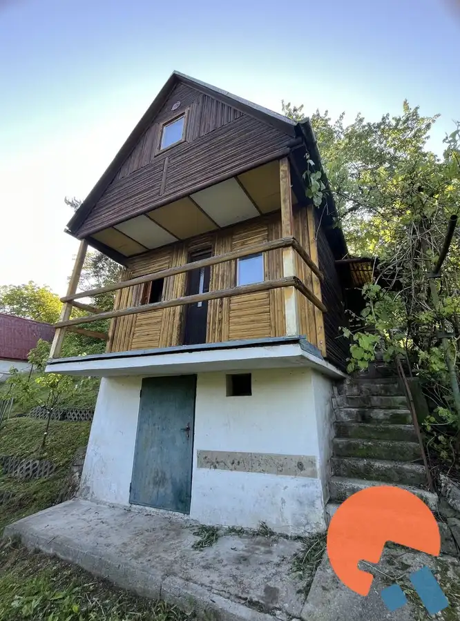
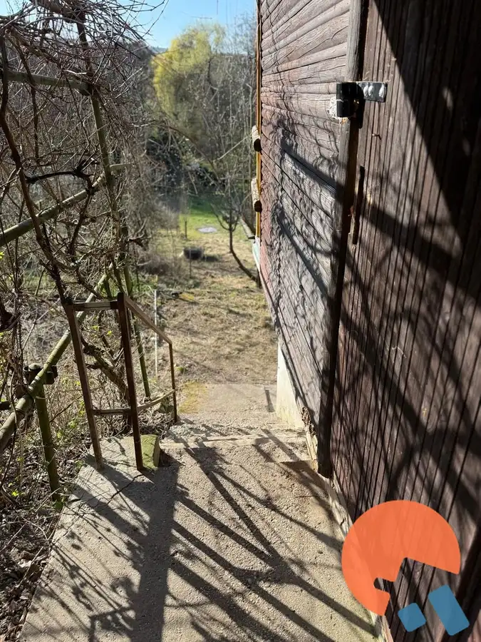
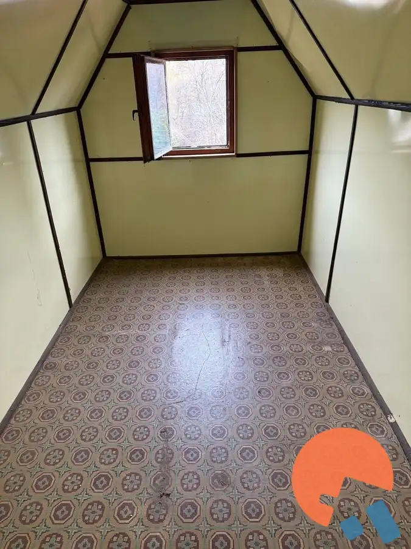
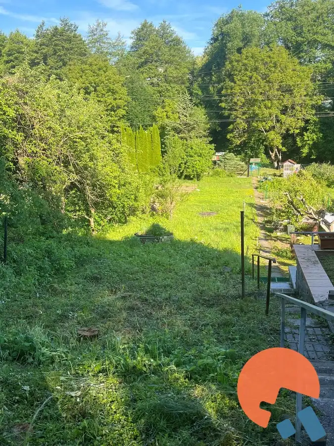
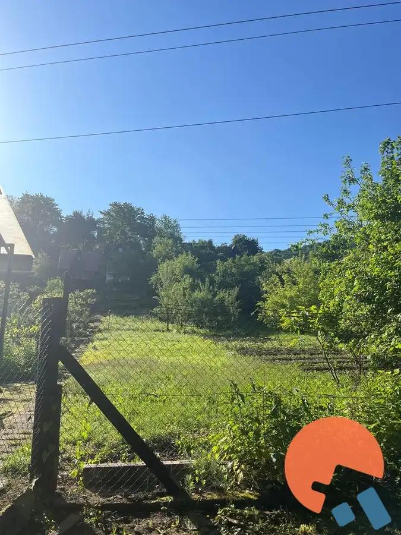
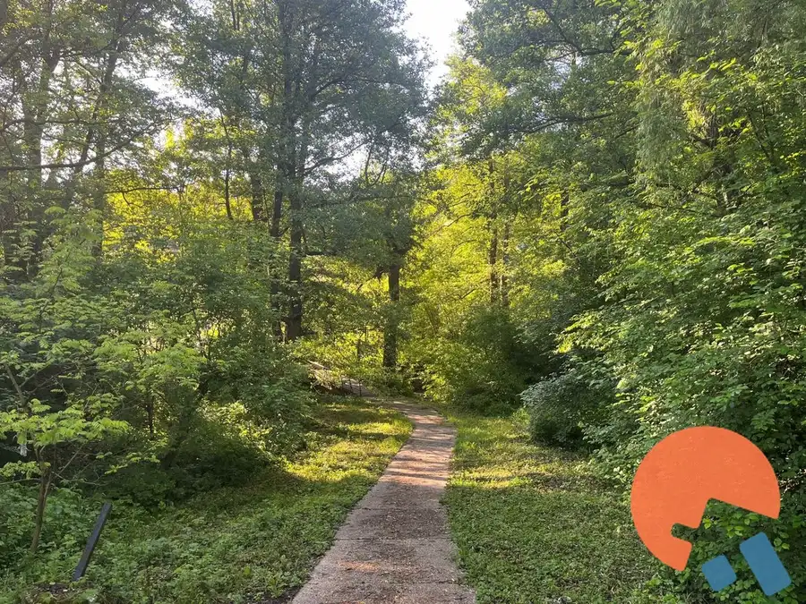
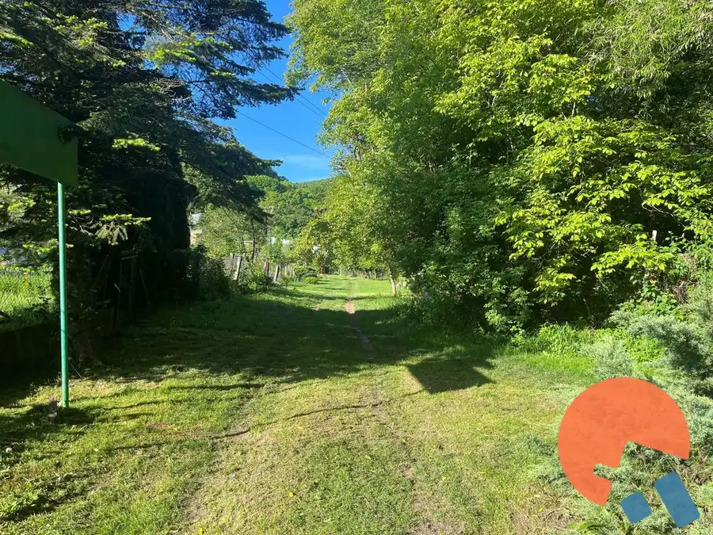

Na predaj - záhradná chatka s vlastným súpisným číslom a 500 m² pozemkom, Zvolen - Sekier
Zvolen








- Plocha500 m²
- StavPôvodný stav
O nehnuteľnosti
Hľadáte miesto, kde si oddýchnete od mestského ruchu, vypestujete vlastnú zeleninu alebo si vytvoríte víkendové útočisko podľa vlastných predstáv?Ponúkame Vám na predaj záhradnú chatku s 500 m² pozemkom v osobnom vlastníctve v záhradkárskej lokalite vo Zvolene.Pozemok má klasický záhradkársky charakter – je dlhý a úzky. Predná časť je rovinatá, postupne prechádza do mierneho svahu, na ktorého konci sa nachádza drevená záhradná chatka obklopená zeleňou.Chatka má zastavanú plochu 15 m², je zapísaná na liste vlastníctva ako záhradná chatka s vlastným súpisným číslom a je čiastočne podpivničená. Súčasťou je aj príjemná krytá terasa, kde si môžete vychutnať rannú kávu alebo oddych po práci v záhrade.Nehnuteľnosť je v pôvodnom stave, vďaka čomu si ju nový majiteľ môže upraviť presne podľa svojich predstáv.Na pozemku je zavedená úžitková voda na závlahu. Elektrina ani voda nie sú do chatky privedené. Pozemok je orientovaný na západ až severozápad a ponúka príjemné prostredie plné zelene.Táto nehnuteľnosť je ideálnou voľbou pre každého, kto hľadá dostupnú záhradu s chatkou len pár minút od mesta a chce si vytvoriť vlastné miesto na oddych.Cena: 17 500 €V prípade záujmu o viac informácií alebo obhliadku ma neváhajte kontaktovať.Ing. Dana Zdychová+421 915 900 237dana@zdychova.sk
Parametre
- Druh
- Záhradná chatka
- Dátum zverejnenia
- 05. 12. 2025
- Energetický certifikát budovy
- nie je
- Plocha pozemku
- 500 m²
- Počet nadzemných podlaží
- 3
- Stav nehnuteľnosti
- Pôvodný stav
- Terén pozemku
- Svahovitý
- Typ
- Predaj
- Typ konštrukcie
- Drevená
- Vykurovanie
- Lokálne
- Zastavaná plocha
- 15 m²
- Úžitková plocha
- 500 m²